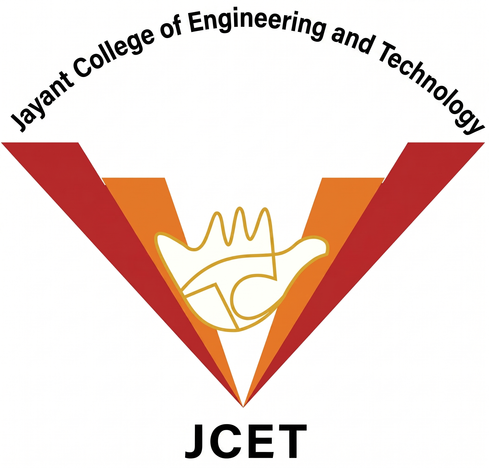

JCET is well known for its huge infrastructure and state of the art facilities. It is also known as Green Campus because it has a unique environment friendly & energy efficient building with fabulous architecture, lush verdant woods and landscape gardens that provide an idyllic academic environment to our students. CCET offers B.E. (Bachelor of Engineering) courses in four streams i.e. Electronics & Communication Engineering, Computer Science & Engineering, Mechanical Engineering and Civil Engineering.
Jayant College of Engineering and Technology aims to be a centre of excellence for imparting technical education and serving the society with self-motivated and highly competent technocrats.